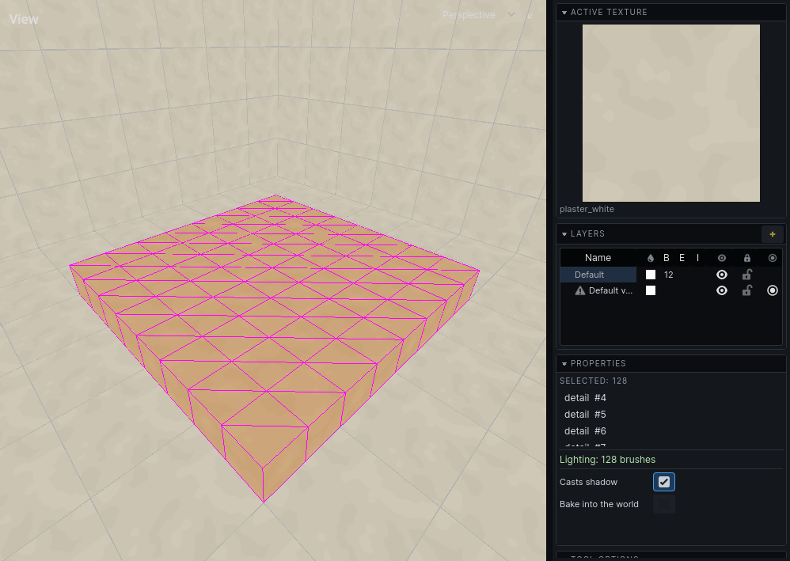
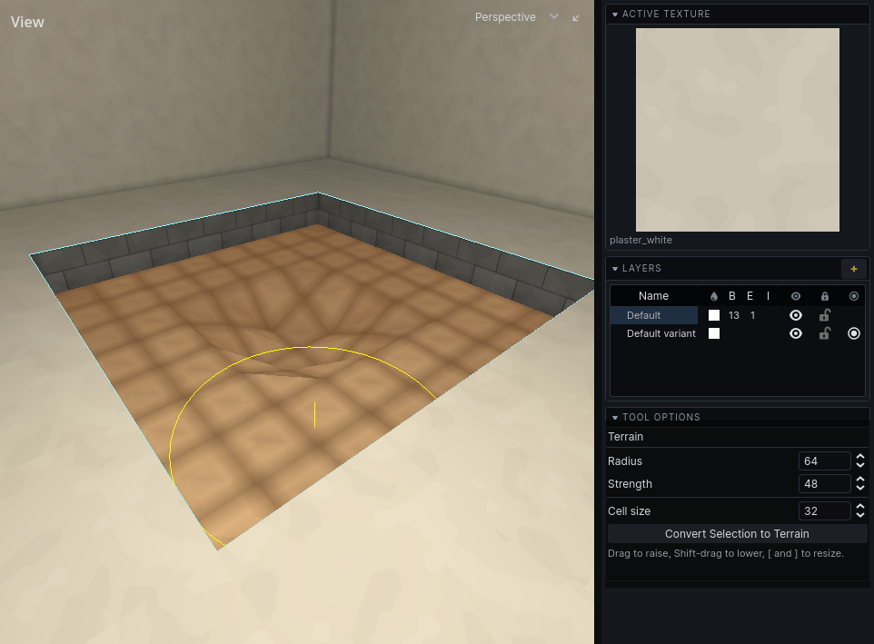

Terrain
Terrain is uneven ground made of detail brushes you sculpt with the mouse. What it is and its limits are in Terrain.
Make terrain
- Draw a box where the ground should be, inside a room. Its top is where the ground starts.
- Select it.
- Press
Hfor the terrain tool and set Cell size in its panel: how far apart the ground's points are. - Click Convert Selection to Terrain.
Or right-click the brush and choose Convert to Terrain; it uses the cell size last set in the panel.
The box is replaced by a grid of prisms. It converts only if it is solid or detail and has a flat top and upright sides; a room's own air brush is not ground and is refused. When nothing converts, the status bar says why. A side gets at most 64 cells, however small the cell size.
The prisms are detail, whichever volume you drew the box in: ground is dressing standing in a room, so a solid box stops carving when it becomes terrain.

Sculpt
Sculpting works in the 3D view only.
- Press
H. - Point at the terrain. A ring shows the brush.
- Hold the left mouse button to raise the ground under the ring. Hold
Shiftas you press to lower it instead; the ring turns red. - Let go. Each stroke is one undo step.
| Do | How |
|---|---|
| Smaller / larger ring | [ / ], or Radius in the panel |
| Faster / slower | Strength in the panel: units a second at the ring's middle |
| Leave the tool | Esc |

A stroke stays on the terrain it started on. The ground cannot be dug below the bottom of the original box.